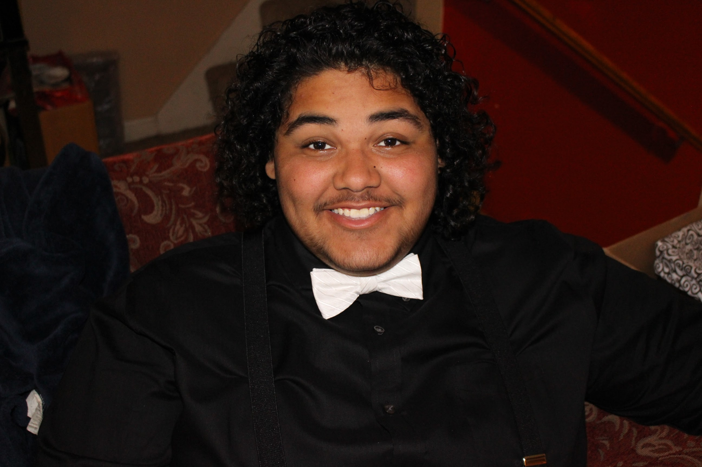

Welcome to my website! I am a first year sutdent here at the Illinois Institute of Technologly, studyng Information Technologly and Management. I am 18 and from Kankakee Illinois, a small town just south of Chicago... So I'm basically a Chicagoan, even though a true Chicagoan would deny me. I graduated from Kankakee High School, and during my senior year took classes at Kankakee Community College. I am fairly new when it comes to coding. My first expirences with coding were in my first semester of college with Java. I am currently enrolled in a Python course, as well as Html. I am really enjoying web design.
